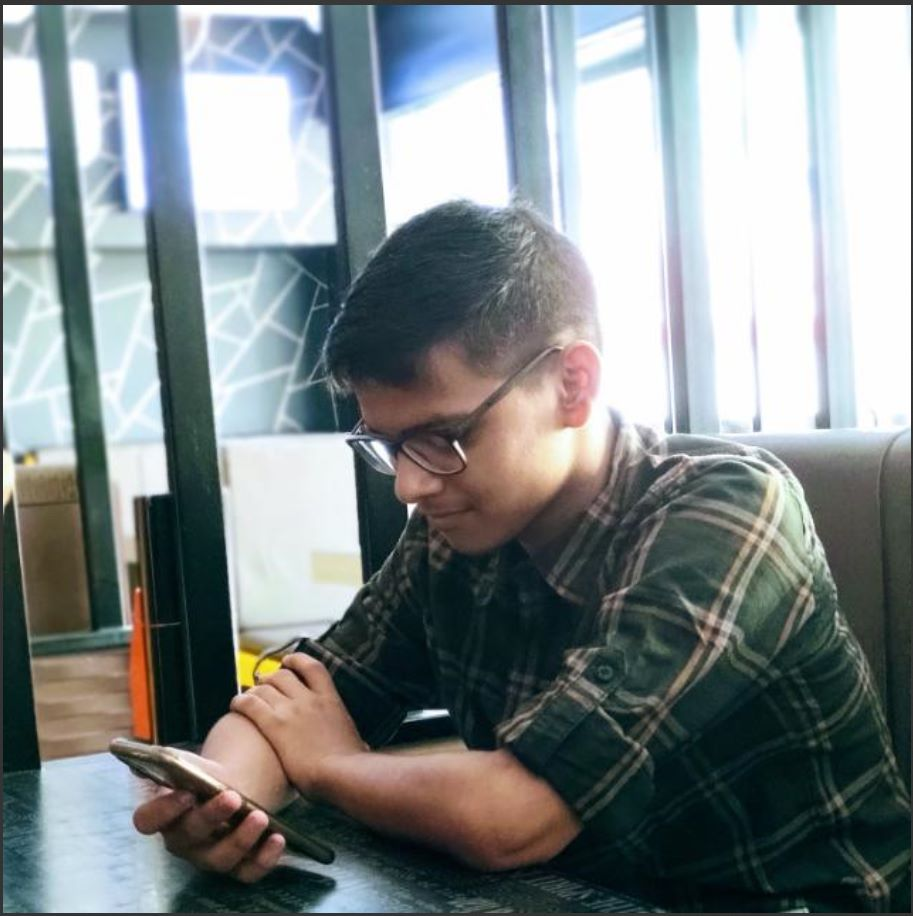

STUDENT TESTIMONIALS

"It’s a multicultural university in a diverse, friendly and vibrant city that suits everyone. The co-curricular activities I have taken part in have been amazing additions to my programme. It was the best three years of my life! The opportunities I had there, the things I got to do and the time I spent with my friends were the best."
Shashwat Kumar Yadav

"The staff are very supportive and are always trying to improve student experience.The course itself is also really well-structured and lecturers provide all kinds of learning resources to help us consolidate knowledge in different ways. They are always happy to help with clarifying any information and they genuinely want to help us do well."